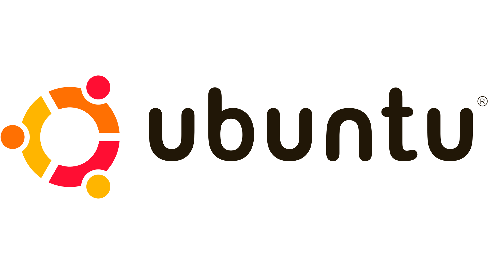
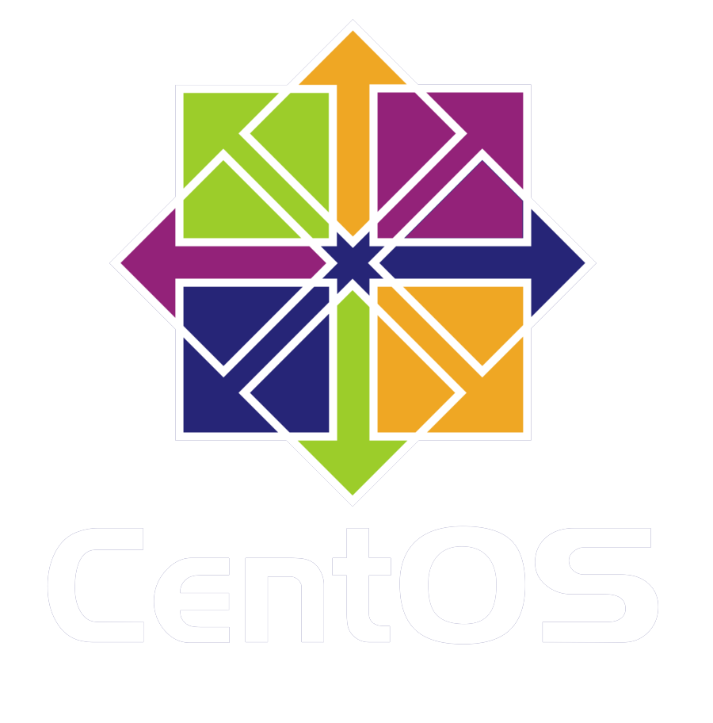
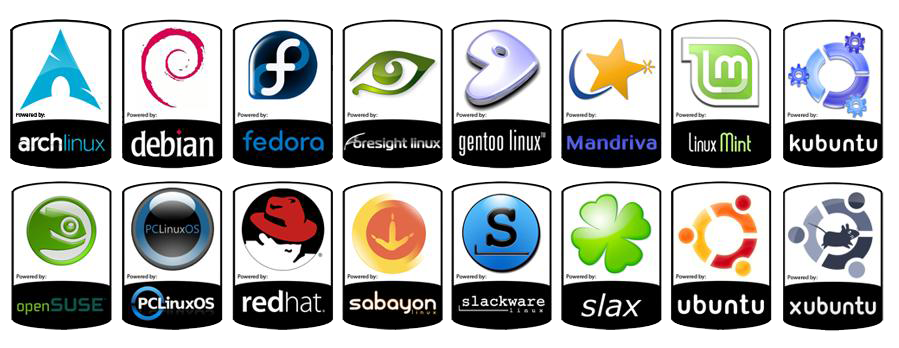

O objetivo do Linux Mint é entregar um sistema operacional moderno que seja simultaneamente poderoso e fácil de usar. Construída sobre o Ubuntu — do qual falaremos melhor adiante — essa distribuição usa os mesmos repositórios de software que ele para garantir que você possa se sentir confortável na migração. O maior objetivo do Linux Mint é fornecer uma experiência completa do Linux, incluindo codecs de mídia, suporte para reprodução de DVD e várias outras comodidades assim que você instala o software. O Mint utiliza o ambiente de desktop Cinnamon para oferecer um ambiente de desktop limpo e estável.

Debian é o nome da distro Linux criada por Ian Ashley Murdoch e é uma das mais populares e utilizadas ao redor do mundo hoje em dia. Por ser gratuito, estável e ter um bom suporte da comunidade, ele é amplamente adotado por pequenas e grandes empresas e administradores de sistema. Fácil de manter, de solucionar problemas e de implantar em qualquer máquina, o Debian é muito seguro e conta com mais de 43.000 pacotes.

OpenSUSE é uma distribuição multi-purpose para aqueles que preferem os pacotes de software mais recentes. Existem opções para a maioria dos ambientes de desktop populares — não limitados a, mas incluindo KDE, GNOME e XFCE. Ele é perfeito como sistema operacional de desktop, mas serve também às suas necessidades de servidor.
O Ubuntu ainda é uma das melhores distribuições Linux de convergência. Ele vem com tudo o que você precisa num sistema para sua organização, escola, casa ou empresa. Os aplicativos essenciais — como pacotes de escritório, navegadores, e-mail e aplicativos de mídia — já vêm pré-instalados e outros tantos podem ser adquiridos no Ubuntu Software Center com apenas um clique. Apoiado pela Canonical, a distribuição vem em vários sabores: Edubuntu, Kubuntu, Lubuntu e Mythbuntu são apenas alguns deles.
Kali Linux é, provavelmente, uma das distros mais complexas do universo Linux. Seu foco está na segurança e ela foi projetada tendo em mente testes de penetração, recuperação de dados e detecção de ameaças. Essa variedade do sistema não é ideal para iniciantes e atende melhor os profissionais versados em pesquisas de segurança. É preciso estar familiarizado com as ferramentas que o Kali oferece para se beneficiar de todo o potencial do OS.

O Pop!_OS inova a experiência de usuário, com um instalador bastante simples, um gerenciamento de janelas aprimorado, um belo design e uma loja de aplicativos totalmente funcional.
Se o universo Linux é famoso por sua natureza livre e de código aberto, é preciso postular que nem sempre esse é o caso. Uma distribuição chamada Red Hat é paga e, graças a isso, oferece segurança de nível militar, 99,999% de tempo de atividade e suporte para cargas de trabalho críticas. Por esse motivo, cerca de 90% das empresas da Fortune Global 500 usam produtos e soluções Red Hat. Para quem quer desfrutar do mesmo nível de segurança e estabilidade sem gastar tanto dinheiro, a distribuição CentOS é a ideal. Ela funciona como um Red Hat gratuito e vem recheada de softwares de uso cotidiano, como Brasero (gravador de DVD), Cheese (visualizador de webcam) e todo o pacote LibreOffice. Fácil de instalar, sólido e confiável, o CentOS é uma excelente opção para quem quer migrar para o software livre.
Elementary OS é provavelmente a distribuição Linux mais simples que existe. Baseada no Ubuntu Elementary, é a escolha perfeita para os novatos. O navegador da web padrão é o Epiphany, que usa o mecanismo de renderização WebkitGtk+. O OS conta, ainda, com um centro de notificações colocado no canto superior direito e um dock semelhante ao do macOS para facilitar a navegação. Não há pacotes de escritório instalados, o que deixa o usuário do Elementary OS bem livre para customizá-lo de acordo com as suas necessidades.
Quase 600 distribuições Linux existem, e a maioria está em desenvolvimento ativo.[3] Por causa da grande disponibilidade de software, as distribuições se diferem em seu foco de usuários, que podem ser computadores pessoais e servidores, ou netbooks e celulares e tablets. Em um passado não muito distante tivemos até uma distribuição desenvolvida por brasileiros chamada de Kurumin. Kurumin Linux foi uma distribuição Linux baseada no Knoppix e que mantém o mesmo sistema de detecção de hardware desta distribuição. Todavia, o Kurumin foi projetado para que fosse bem mais compacto, cabendo, assim, em suas versões iniciais, em um mini-CD de 80 mm.